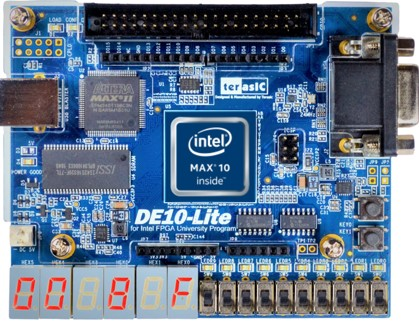
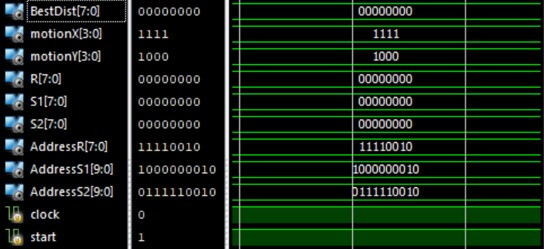
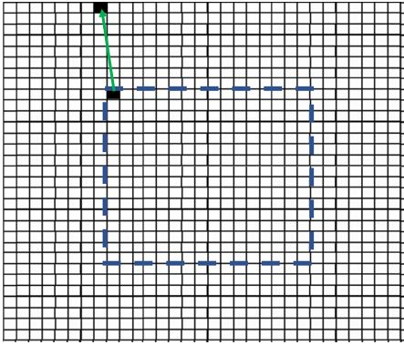

FPGA Projects
Motion Estimator



Before initiating the physical design process of our Motion Estimator ASIC, we will first emulate the Verilog Code we wrote on an FPGA as FPGA's can easily be reprogrammed as opposed to an ASIC which we would have to dispose of and remanufacture. This will drastically reduce the consequences should there be an error in our design.
Click here to go to ASIC Implementation of Motion Estimator